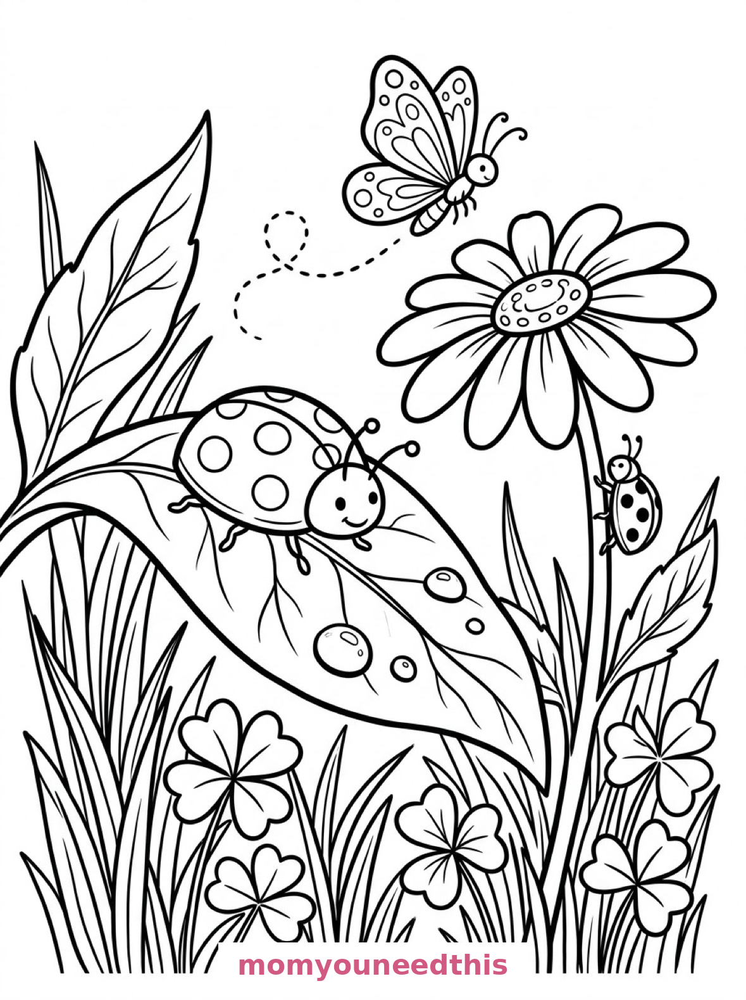
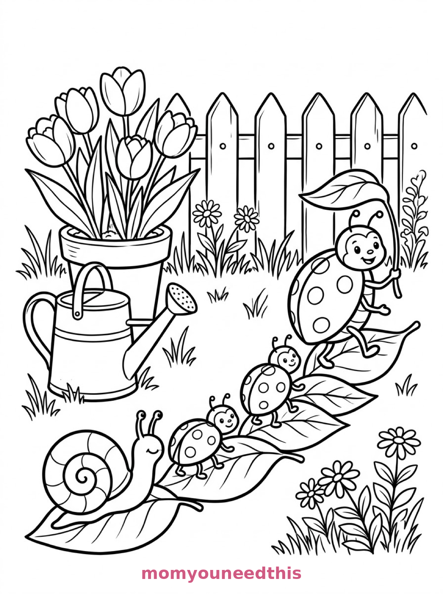
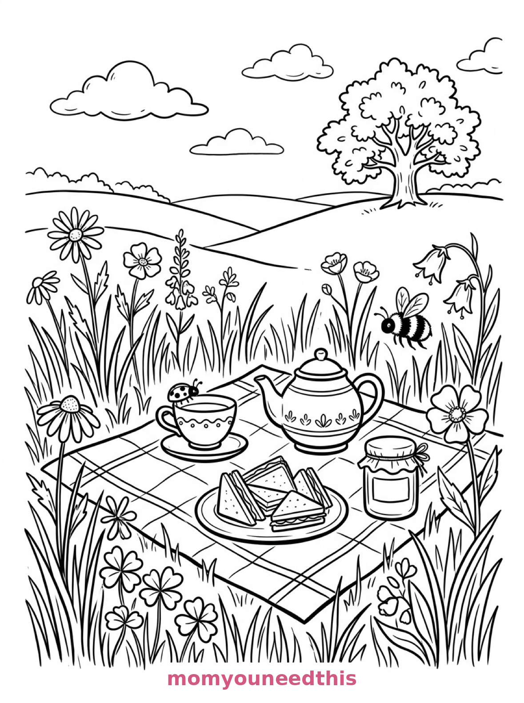

Free Ladybug Coloring Pages Garden Leaf, Family Walk & Picnic Printables
These free ladybug coloring pages spot ladybugs through a whole garden day — a big ladybug on a dewy leaf, a ladybug family crossing leaf stepping stones, and a ladybug at a meadow picnic. Download the set below, print at home on letter-size paper, and let the coloring fun begin. No signup needed.
Last updated: October 23, 2026
Quick Answer
Yes — this page has three free printable ladybug coloring pages: a large spotted ladybug on a leaf with a butterfly above, a ladybug family crossing a garden path on stepping-stone leaves, and a ladybug perched on a teacup at a meadow picnic. Bold outlines and big spaces, made for little hands. Download, print on letter-size paper, and hand over the crayons — no signup, no cost.
At a Glance
- Ages: 3–8
- Pages: 3 free printables
- Format: Print at home, letter size
- Cost: Free, no signup
- Supplies: Crayons or markers
- Time: 10–20 minutes
🐞 Ladybug on a Dewy Leaf Coloring Page

🎨 Download Your Free Ladybug Leaf Coloring Page
A large spotted ladybug crawls along a curved leaf with detailed veins and dewdrops, a second ladybug climbs a daisy stem beside it, and tall grass, clover and a patterned butterfly fill the garden — bold outlines, big spaces, zero signup.
⬇️ Download Free Ladybug Leaf Page 🖨️ Print Ladybug Leaf Page🎁 Free printable for preschoolers & kids
🍃 Ladybug Family on Stepping Stones Coloring Page

🎨 Download Your Free Ladybug Family Coloring Page
A ladybug family crosses a garden path on a line of broad leaves like stepping stones, the largest leading with a tiny leaf umbrella, a watering can and a tulip pot beside the path and a snail following behind — bold outlines, big spaces, zero signup.
⬇️ Download Free Ladybug Family Page 🖨️ Print Ladybug Family Page🎁 Free printable for preschoolers & kids
🧺 Ladybug at the Picnic Coloring Page

🎨 Download Your Free Ladybug Picnic Coloring Page
A ladybug perches on the rim of a teacup set on a picnic blanket in a meadow, surrounded by a teapot, a plate of sandwiches and a jam jar, with wildflowers, tall grasses, a bee and rolling hills behind — bold outlines, big spaces, zero signup.
⬇️ Download Free Ladybug Picnic Page 🖨️ Print Ladybug Picnic Page🎁 Free printable for preschoolers & kids
More Coloring Pages
Tap any picture to open its theme page and download the free printable.


🐞 How To Use This Page
- Browse the three designs and pick the ladybug scene your child will love most.
- Tap download or print under that design — the file opens full-size, ready for letter-size paper.
- Print a couple of copies of the family walk — every ladybug in line deserves its own red.
- Color together with crayons or markers and count the spots.
🌼 Why Kids Love Ladybug Coloring Pages
Ladybugs are tiny, round and unmistakable — the friendliest bug in the garden. These pages give them a whole garden to live in: a dewy leaf of their own, a family parade across stepping-stone leaves, and a picnic where a ladybug has claimed the best seat (the teacup rim, of course).
Ladybug pages are also spot practice in disguise. The spots are printed as part of the design, so kids color the shell around them, fill them in dark, or count them as they go — three different games on the same page, and a finished ladybug always looks unmistakably like a ladybug.
🐞 Meet the Three Ladybug Scenes on This Page
The ladybug on the leaf. A large spotted ladybug crawls along a curved leaf with detailed veins, dewdrops resting on its surface, a second ladybug climbing a daisy stem beside it, tall grass blades and clover leaves filling the garden floor, and a butterfly with patterned wings hovering above the flowers. It is the biggest, boldest page in the set — a true close-up.
The ladybug family walk. A ladybug family crosses a garden path on a line of broad leaves like stepping stones, the largest ladybug leading with a tiny leaf umbrella held overhead, a watering can and a terracotta flowerpot with blooming tulips beside the path, a snail with a spiralled shell following behind, and picket fence slats across the background. It is the sweetest page in the set — a whole family, mid-adventure.
The ladybug picnic. A ladybug perches on the rim of a teacup set on a picnic blanket in a meadow, surrounded by a teapot, a plate of sandwiches and a jam jar, with wildflowers and tall grasses swaying around the blanket, a bee hovering near an open flower, and rolling hills with a single oak tree in the distance. It is the most storybook page in the set — a picnic from a ladybug's-eye view.
✏️ Ladybug Coloring Tips
- Red shell, black spots is classic. Color the shell red and the spots black (or leave them white for a snowy ladybug). A second copy can be orange, yellow or rainbow.
- Leave the dewdrops white. On the leaf page, white dewdrops against a green leaf look like real morning dew.
- Pattern the butterfly. The butterfly over the flowers has patterned wings made for two or three colors in symmetry — left wing matches right wing.
- Count the spots. Every ladybug on the family page has a different spot count — a built-in counting game for the walk across.
🐞 Coloring Pages for Different Ages
For ages 3 to 4, start with the ladybug on the leaf. One huge ladybug is all a little colorer needs, and the leaf makes a satisfying ocean of green around it.
For ages 5 to 6, the family walk is the sweet spot. A line of ladybugs in different sizes, a snail and a tulip pot give a real scene with plenty of small wins.
For ages 7 to 8, hand over the picnic. The teacup, the sandwiches, the jam jar and the meadow reward careful coloring — and the tiny ladybug on the rim is a delicate finishing touch.
🌼 More Ladybug Fun After Coloring
Spot math: count every spot on all three pages and write the totals on the back. The family page alone will keep a young counter happily busy — and arguing about whether the leader's spots count double (they don't, but let them plead the case).
For more garden residents, the spring coloring pages bloom with flowers and butterflies — and the hedgehog carries the garden onward in the mushroom coloring pages.
🔗 More Free Printables You’ll Love
- Free Spring Coloring Pages Flowers, butterflies and spring scenes for little learners.
- Free Mushroom Coloring Pages Mushroom houses and cottages in a gentle storybook style.
- Free Bunny Coloring Pages Garden, burrow and orchard bunnies to print and color.
- All Free Coloring Pages Browse every free coloring page on the site, organized by theme.
❓ Ladybug Coloring Pages FAQ
Are these ladybug coloring pages really free?
Yes — all three designs on this page are free original printables from MomYouNeedThis. Download them, print them at home, and color — no signup and no cost.
What ages are these coloring pages best for?
Kids ages 3 to 8 get the most from this set. The big leaf ladybug is the gentlest start for younger children, while the family walk and picnic scenes have the detail older kids enjoy.
How do I print a coloring page?
Tap the download button under the design you want, then print the file on regular letter-size paper. The print button opens the full-size page in a new tab if you prefer to print from there.
How many ladybugs are in this set?
Plenty: two on the leaf page, a whole family plus a snail on the stepping-stones page, and one very small ladybug on a teacup at the picnic — with a butterfly and a bee as guests.
Can I make a ladybug coloring book from these pages?
Yes — print all three designs, stack them in order, and staple along the left edge. Add a cover sheet with your child's name for a finished homemade ladybug coloring book.